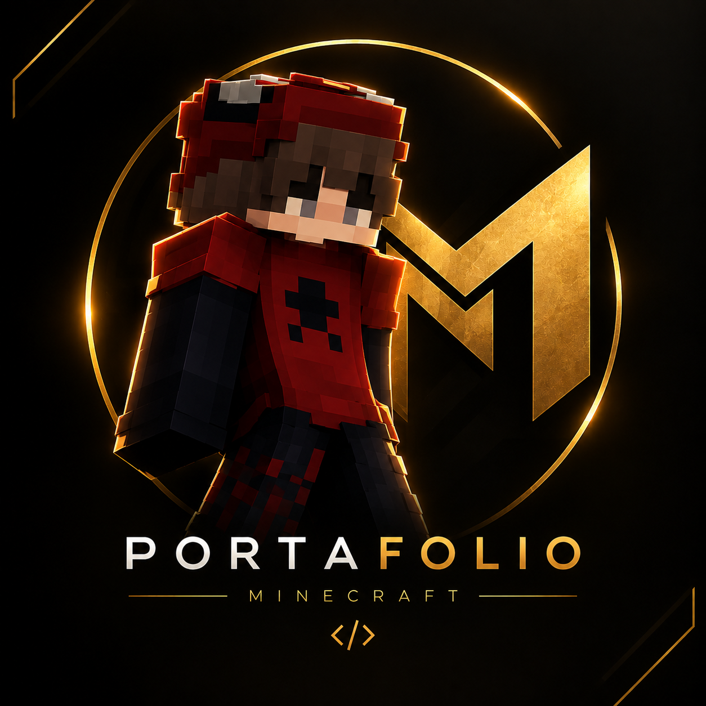

Información personal
Mi nombre es Jasmany, tengo 14 años y cuento con aproximadamente 2 años de experiencia como Staff en servidores de Minecraft.
Staff de Minecraft • 2 años de experiencia • Desarrollo de bots de Discord

Responsabilidad, compromiso y trabajo en equipo.
Mi nombre es Jasmany, tengo 14 años y cuento con aproximadamente 2 años de experiencia como Staff en servidores de Minecraft.
Me considero una persona responsable, comprometida y con muchas ganas de seguir aprendiendo. Me gusta ayudar a los jugadores, resolver problemas y mantener un ambiente seguro, agradable y respetuoso dentro de la comunidad.
Ayudo a los jugadores, atiendo dudas, resuelvo conflictos y apoyo en el cumplimiento de las normas.
He participado en la organización y administración de servidores, trabajando con equipos de Staff.
Busco mejorar mis habilidades, aprender de mis errores y aportar ideas para el crecimiento de cada comunidad.
Moderación, atención de reportes y mantenimiento del orden.
Coordinación del Staff, organización de tareas y seguimiento de la comunidad.
Supervisión de managers, organización interna y apoyo administrativo.
Administración de alto nivel, supervisión del Staff y resolución de situaciones importantes.
Gestión general, coordinación de proyectos y responsabilidad sobre la comunidad.
Ayuda a jugadores, resolución de dudas y orientación sobre las normas.
Dirección del proyecto, coordinación de equipos y planificación de mejoras.
Fundación y administración del proyecto, supervisión general y desarrollo de ideas.
He creado 4 bots de Discord para diferentes servidores, con sistemas de tickets, comandos personalizados, moderación, registros y herramientas de soporte.
He trabajado con equipos de Staff, ayudando a usuarios, solucionando problemas y aportando ideas para mejorar las comunidades.
Mi objetivo es seguir mejorando mis habilidades, aprender de mis errores y ganarme la confianza de los usuarios y administradores mediante mi trabajo, actitud y compromiso. Estoy dispuesto a dedicar tiempo y esfuerzo para aportar positivamente a cada comunidad.
Discord: jasmany202